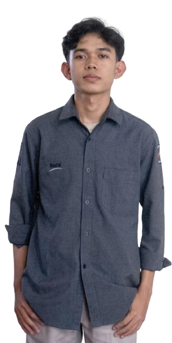
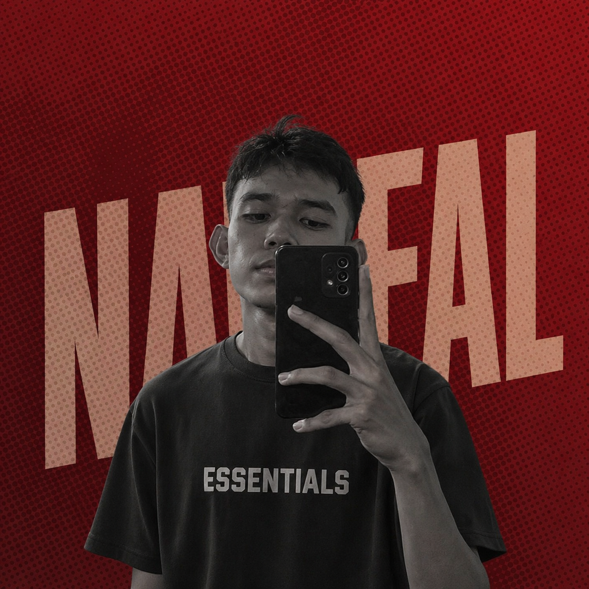

Pahami
Menggali kebutuhan, konteks, dan tujuan sebelum menentukan solusi.
Hello, saya
デザイナー · IT STUDENT
Mahasiswa Teknologi Rekayasa Komputer yang tertarik pada software, jaringan, IoT, dan cybersecurity.
"Building the future, one line at a time."
HANGAR_01 · SECTOR FN · Pekanbaru, Indonesia

Belajar, membangun,
dan terus berkembang.

Saya mahasiswa Teknologi Rekayasa Komputer di Politeknik Caltex Riau. Saya tertarik pada pengembangan aplikasi, web development, jaringan komputer, IoT, dan cybersecurity.
Saya pernah mengerjakan proyek web dan Android, membuat perangkat berbasis ESP32, serta melakukan konfigurasi dan simulasi jaringan.
Sedang dipelajari sekarang
Berikutnya
Berikutnya
Berikutnya
Tujuan akhir
Menggali kebutuhan, konteks, dan tujuan sebelum menentukan solusi.
Menyusun pendekatan teknis dan membagi pekerjaan menjadi langkah yang jelas.
Mengembangkan solusi secara bertahap dengan fokus pada fungsi dan pengalaman.
Memeriksa hasil, memperbaiki kekurangan, dan merapikan detail implementasi.
Kumpulan lagu pilihan yang menemani waktu belajar, berkarya, dan bersantai.
BUKA DI SPOTIFYTertarik berkolaborasi, berdiskusi tentang teknologi, atau sekadar menyapa? Saya terbuka untuk koneksi dan peluang baru.